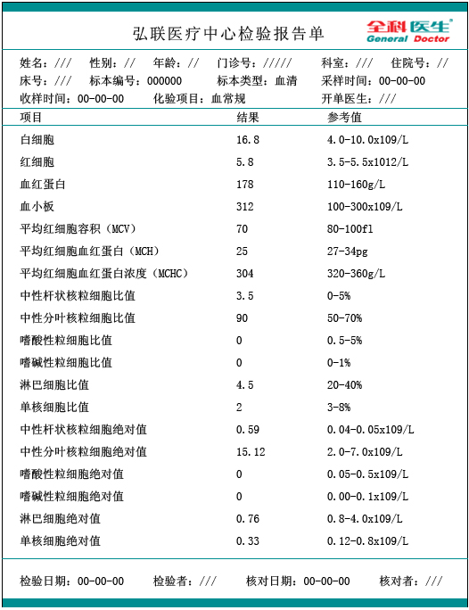
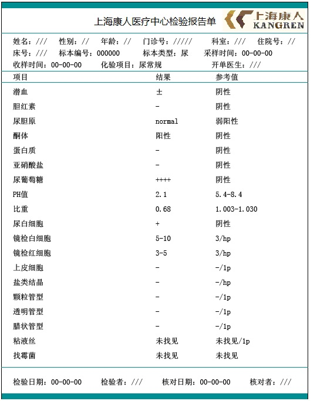
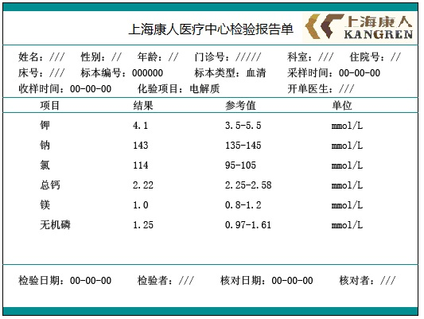
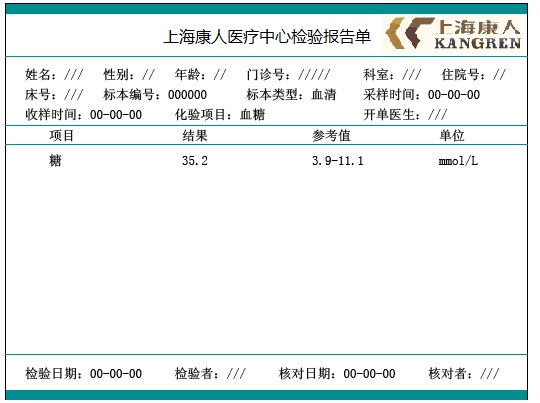
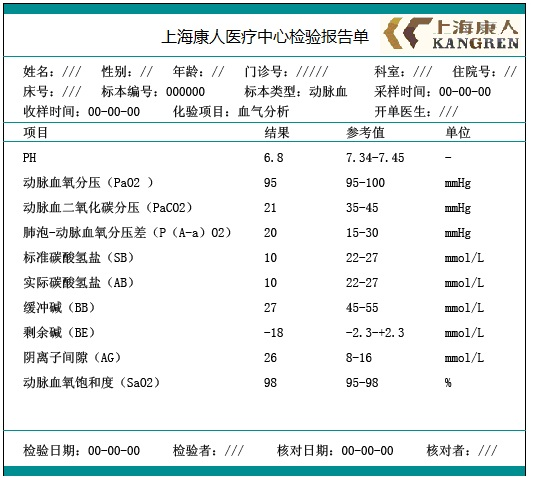
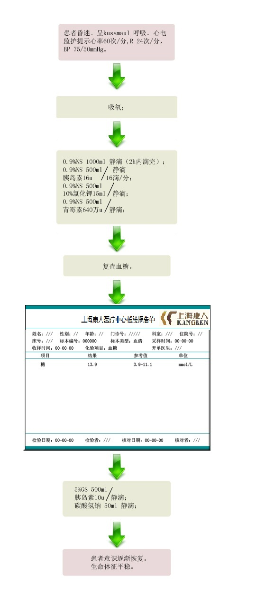

【病例摘要】
- 现病史：患者，女性，55岁。昏迷1h。2天前因左脚拇指外伤，自行口服抗生素治疗。半天前出现大量呕吐，呕吐物为胃内容物。1h前出现意识不清。
- 既往史：患者有糖尿病史20余年，一直坚持服用“消渴丸”等口服降糖药治疗，并坚持控制饮食，空腹血糖波动在5.5-7.5mmol/L之间。近来多尿、烦渴、乏力等症状加重。
- 查体：T 35.5 ℃，P 60次/分，R 24次/分，BP 75/50mmHg。平卧位，深昏迷状态，呼吸深大，有烂苹果味，皮肤黏膜干燥，弹性差；双侧瞳孔等大同圆，对光反射迟钝。颈软，两肺底少许细湿罗音。心脏、腹部无明显阳性体征。四肢末端发凉，左足拇指可见皮肤略红肿，无脓性分泌物。生理反射及病理反射均消失。

【辅助检查】
- 血常规:
 - 尿常规:
 - 电解质:
 - 血糖:
 - 血气分析:

【诊断】
- 糖尿病酮症酸中毒昏迷 左足感染
【事件】
